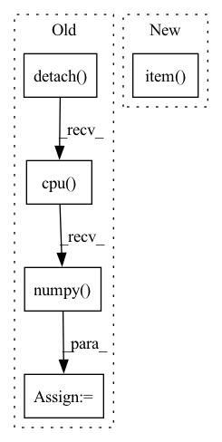

Pattern ID :31170

Before Change
//compute q loss and backward
q1_loss = F.mse_loss(curr_state_q1_value, target_q.detach())
q2_loss = F.mse_loss(curr_state_q2_value, target_q.detach())
q1_loss_value = q1_loss.detach().cpu().numpy()
q2_loss_value = q2_loss.detach().cpu().numpy()
self.q1_optimizer.zero_grad()
self.q2_optimizer.zero_grad()
(q1_loss + q2_loss).backward()
After Change
return {
"loss/q1": q1_loss.item(),
"loss/q2": q2_loss.item(),
"loss/policy": policy_loss.item(),
"loss/entropy": alpha_loss_value,
"misc/entropy_alpha": self.alpha.item(),
}
In pattern: SUPERPATTERN
Frequency: 3
Non-data size: 5
Instances
Fragment ID: 91534967
Project Name: x35f/unstable_baselines
Commit Name: fd650918d0f96ab53625afed362025e5a53c10a6
Time: 2022-06-13
Author: 1621322691@qq.com
File Name: unstable_baselines/baselines/sac/agent.py
M Class Name: SACAgent
N Class Name: SACAgent
M Method Name: update(2)
N Method Name: update(2)
M Parent Class: BaseAgent,torch.nn.Module
N Parent Class: BaseAgent,torch.nn.Module
M File Name: unstable_baselines/baselines/sac/agent.py
N File Name: unstable_baselines/baselines/sac/agent.py
M Start Line: 78
M End Line: 139
N Start Line: 78
N End Line: 131
'>
Before Change
//entropy loss
entropy_loss = -torch.mean(dist_entropy)
entropy_loss_value = entropy_loss.detach().cpu().numpy()
tot_loss = v_loss + entropy_loss + policy_loss
self.policy_optimizer.zero_grad()
self.v_optimizer.zero_grad()
After Change
//entropy loss
entropy_val = torch.mean(dist_entropy).item()
approx_kl = (log_pi_batch - new_log_pi).mean().item()
self.tot_update_count += 1
return {
'>
Fragment ID: 91534981
Project Name: x35f/unstable_baselines
Commit Name: 6c5f28faf8eed273f859610adbd71a0361d36112
Time: 2021-03-31
Author: 1621322691@qq.com
File Name: ppo/model.py
M Class Name: PPOAgent
N Class Name: PPOAgent
M Method Name: update(2)
N Method Name: update(2)
M Parent Class: BaseAgent,torch.nn.Module
N Parent Class: BaseAgent,torch.nn.Module
M File Name: ppo/model.py
N File Name: ppo/model.py
M Start Line: 93
M End Line: 116
N Start Line: 96
N End Line: 125
'>
Before Change
//compute q loss
q_loss = F.mse_loss(curr_state_q_value, target_q.detach())
q_loss_value = q_loss.detach().cpu().numpy()
self.q_optimizer.zero_grad()
q_loss.backward()
//compute policy loss
After Change
//compute policy loss
new_curr_state_q_value = self.q_network(torch.cat([obs_batch, new_curr_state_action], dim=1))
policy_loss = - new_curr_state_q_value.mean()
policy_loss_value = policy_loss.item()
self.policy_optimizer.zero_grad()
policy_loss.backward()
self.policy_optimizer.step()
'>
Fragment ID: 91534962
Project Name: x35f/unstable_baselines
Commit Name: b5cb1f7a9fef61466399fec8b8415e4b3119229a
Time: 2021-12-10
Author: 1621322691@qq.com
File Name: unstable_baselines/baselines/ddpg/agent.py
M Class Name: DDPGAgent
N Class Name: DDPGAgent
M Method Name: update(2)
N Method Name: update(2)
M Parent Class: BaseAgent,torch.nn.Module
N Parent Class: BaseAgent,torch.nn.Module
M File Name: unstable_baselines/baselines/ddpg/agent.py
N File Name: unstable_baselines/baselines/ddpg/agent.py
M Start Line: 70
M End Line: 99
N Start Line: 68
N End Line: 96